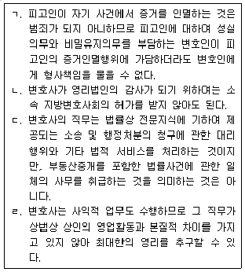
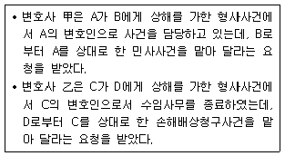
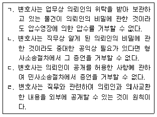
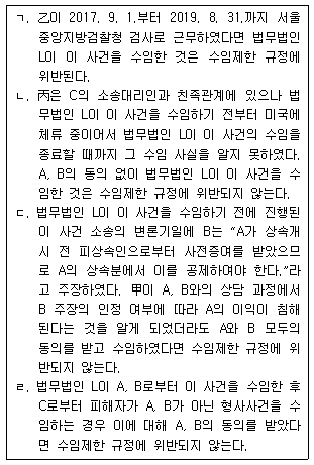
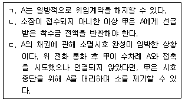
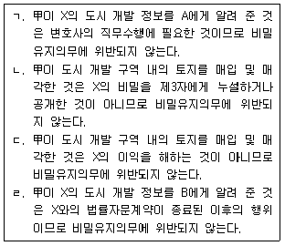
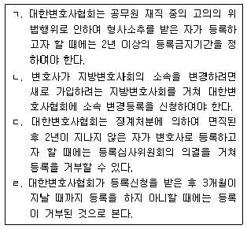
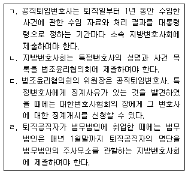
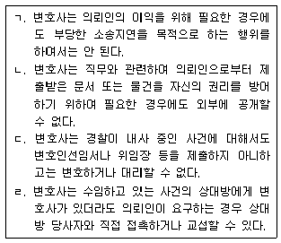

법조윤리 (2020-08-01 기출문제)
1과목: 임의 구분
1. 변호사의 윤리에 관한 설명 중 옳지 않은 것을 모두 고른 것은? (다툼이 있는 경우 판례에 의함)

- ㄱ, ㄴ
- ㄱ, ㄹ
- ㄴ, ㄷ
- ㄷ, ㄹ
(정답률: 알수없음)

2. 대한변호사협회 변호사징계위원회(이하 ‘변협징계위원회’라 한다)에 관한 설명 중 옳지 않은 것은?
- 변협징계위원회에는 위원장 1명과 간사 1명을 두며, 위원장은 대한변호사협회의 장이 임명한다.
- 변호사의 자격을 취득한 날부터 10년이 지나지 아니한 자는 변협징계위원회의 위원장이나 판사·검사·변호사인 위원 또는 예비위원이 될 수 없다.
- 변협징계위원회의 위원 및 예비위원의 임기는 각각 2년으로 한다.
- 변협징계위원회의 위원 및 예비위원은 법무부 변호사징계위원회의 위원 및 예비위원을 겸할 수 없다.
(정답률: 알수없음)
3. 변호사 甲은 대전지방검찰청 수사검사에게 변호인선임서를 제출하지 아니하고 검사실을 방문하여 수사 중인 형사사건에 대하여 수사의 적법절차위반의 점과 혐의 없음을 변호하였다. 변호사 甲의 징계에 관한 설명 중 옳지 않은 것은? (다툼이 있는 경우 판례에 의함)
- 대전지방검찰청 검사장은 변호사 甲을 「변호사법」 제29조의2(변호인선임서 등의 미제출 변호 금지) 위반의 징계혐의사실로 대한변호사협회의 장에게 징계개시를 신청하여야 한다.
- 대한변호사협회 변호사징계위원회가 과태료 300만 원의 징계결정을 하였다면, 변호사 甲은 그 통지를 송달받은 날부터 30일 이내에 법무부 변호사징계위원회에 이의신청을 할 수 있다.
- 법무부 변호사징계위원회의 이의신청 기각결정에 불복하는 경우 변호사 甲은 법무부 변호사징계위원회를 상대로 그 통지를 받은 날부터 90일 이내에 행정법원에 소를 제기할 수 있다.
- 변호사 甲에 대한 징계가 과태료 300만 원으로 확정되었다면 징계처분 정보를 대한변호사협회 인터넷 홈페이지에 게재하는 기간은 최초 게재일부터 기산하여 2년이다.
(정답률: 알수없음)
4. 변호사의 징계에 관한 설명 중 옳은 것은?
- 「변호사법」에 따라 2회 이상 과태료 이상의 징계처분을 받은 후 다시 「변호사법」 제91조 제2항에 따른 징계사유가 있는 자로서 변호사의 직무를 수행하는 것이 현저히 부적당하다고 인정되는 경우 영구제명 사유에 해당한다.
- 징계혐의자는 변호사 아닌 학식과 경험이 있는 자를 특별변호인으로 선임할 수 있으나, 그 특별변호인은 징계혐의자를 위하여 독립하여 징계절차에서 행위를 할 수 없다.
- 법무부장관의 업무정지명령에 따른 업무정지 기간은 6개월로 한다. 다만, 법무부장관은 해당 변호사에 대한 공판 절차 또는 징계 절차가 끝나지 아니하고 업무정지 사유가 없어지지 아니한 경우 법무부 변호사징계위원회의 의결에 따라 업무정지 기간을 갱신할 수 있다.
- 대한변호사협회의 장, 지방검찰청 검사장 또는 업무정지명령을 받은 변호사는 법무부장관에게 업무정지명령의 해제를 신청할 수 있다.
(정답률: 알수없음)
5. A는 소유권이전등기 말소청구소송의 피고로서 항소심의 소송대리를 법무법인 L에 위임하였다. 법무법인 L의 대표변호사 甲은 A에게 위 소유권이전등기에 따른 양도소득세 납부 자금의 압류가능성이 있으니 대신 보관하여 주겠다고 권유하여 이를 건네받아 횡령하였다. 법무법인 L의 책임에 관한 설명 중 옳지 않은 것은? (다툼이 있는 경우 판례에 의함)
- 甲이 그 업무집행으로 인하여 A에게 손해를 가한 때에는 법무법인 L은 甲과 연대하여 손해배상책임을 부담한다.
- 甲의 행위가 甲의 업무 자체에는 속하지 아니하나 그 행위의 외형으로부터 관찰하여 마치 甲의 업무 범위 안에 속하는 것으로 보이는 경우에도 업무집행으로 인한 것에 해당한다.
- 甲의 행위가 외형상 법무법인 L 대표변호사의 업무집행이라고 인정될 수 있다고 하더라도 그것이 甲의 개인적 이익을 도모하기 위한 것이거나 법령의 규정에 위배된 것이라면 법무법인 L은 손해배상책임을 부담하지 않는다.
- 甲의 행위가 외형상 업무집행행위에 속한다고 인정되는 경우에도 그 행위가 대표변호사의 업무 내지는 직무권한에 속하지 아니함을 A가 알았거나 중대한 과실로 알지 못한 때에는 법무법인 L은 손해배상책임을 부담하지 않는다.
(정답률: 알수없음)
6. 변호사 甲은 구속 수감된 형사사건의 의뢰인인 피고인 A를 접견하였다. A는 경찰과 검찰의 수사과정에서 자백하였으나 사실은 B의 단독 범행인데 자신의 형편이 어려워서 돈을 받기로 하고 허위로 진술한 것이고, 현재 B가 약속한 돈을 주지 않으니 가족의 이름으로 적당한 사유를 만들어 소를 제기하는 방법으로 돈을 받아 주면 은혜를 잊지 않겠다고 한다. 변호사 甲은 A의 사정이 딱하여 그의 뜻대로 돕기로 하였다. 이에 관한 설명 중 옳지 않은 것은? (다툼이 있는 경우 판례에 의함)
- 변호사 甲이 A 대신 그 가족인 C를 원고로 내세워 스스로 소송대리인이 되어 B를 상대로 대여금청구소송을 제기하고, 의뢰인을 위하여 자기 직원 명의의 계좌에 돈을 이체하는 편의를 제공하는 것은 허용된다.
- 변호사는 공공성을 지닌 법률 전문직으로서 독립하여 자유롭게 직무를 수행하여야 하고, 직무를 수행하면서 진실을 은폐하거나 거짓 진술을 하여서는 아니 되지만 변호사 甲이 B의 범행을 수사기관에 알려야 하는 것은 아니다.
- 변호사 甲이 A로 하여금 적극적으로 허위진술을 하도록 하는 것은 A의 범행결의를 강화하는 행위로서 범인도피방조죄가 인정될 수 있다.
- 변호사는 수임한 법률사무에 관하여 의뢰인의 요구를 성실하게 처리하지 않으면 원칙적으로 민사상 채무불이행책임을 부담하지만, A에게 사실상 이익이 있어도 정당한 변론권의 범위를 넘는 경우에는 A의 요구를 거절하더라도 변호사 甲은 손해배상책임을 지지 않는다.
(정답률: 알수없음)
7. 변호사의 사건 수임에 관한 설명 중 옳지 않은 것은? (다툼이 있는 경우 판례에 의함)

- B가 의뢰하는 사건의 내용과 A의 동의 여부에 따라 甲이 수임할 수 있는 사건에 해당하는지가 결정된다.
- B가 의뢰하는 사건이 A에 대한 임대차건물인도청구사건이라면 甲은 A의 동의를 받아 사건을 수임할 수 있다.
- D가 의뢰하는 사건이 C에 대한 위 상해로 인한 손해배상청구사건인 경우 형사사건이 종결되고 C의 동의가 있으면 수임할 수 있다.
- 乙이 D가 의뢰한 위 상해로 인한 손해배상청구사건을 수임한 경우 C가 법원에 이의를 제기하면 법원으로서는 乙의 소송관여를 더 이상 허용하여서는 아니 되고, 그때까지의 乙의 소송행위는 무효이다.
(정답률: 알수없음)
8. 변호사의 비밀유지의무에 관한 설명 중 옳지 않은 것을 모두 고른 것은?

- ㄱ, ㄴ
- ㄱ, ㄹ
- ㄴ, ㄷ
- ㄷ, ㄹ
(정답률: 알수없음)
9. A와 B는 2020. 3. 7. C를 상대로 하여 서울중앙지방법원에 소송계속 중인 상속재산 분할청구사건(이하 ‘이 사건’이라 한다)을 법무법인 L에 의뢰하였다. 법무법인 L의 구성원 변호사로 甲, 乙, 丙이 있고 구성원 아닌 소속 변호사로 丁이 있다. 법무법인 L은 담당변호사로 甲과 丁을 지정하였고, 乙과 丙은 이 사건 수임이나 업무수행에 관여하지 않았다. 이에 관한 설명 중 옳지 않은 것을 모두 고른 것은?

- ㄱ, ㄴ
- ㄱ, ㄷ
- ㄴ, ㄷ
- ㄴ, ㄹ
(정답률: 알수없음)
10. 甲은 X국의 법에 의해 변호사 자격을 취득한 자이다. 甲은 X국에서 변호사로 등록한 후 3년 7개월간 활동하였는데, 이를 기반으로 대한민국에서 외국법자문사로 활동하기 위하여 법무부장관에게 자격승인 신청을 하였다. 甲은 X국에 거주할 당시 교통사고를 일으켜 징역형의 집행유예를 선고받아 확정된 적이 있는데 자격승인 신청 당시 집행유예기간이 지난 후 2년 2개월이 지났다. 이에 관한 설명 중 옳지 않은 것은?
- 甲이 법무부장관으로부터 자격승인을 받기 위해서는 X국이 ｢외국법자문사법｣상 자유무역협정등의 당사국이어야 한다.
- 甲은 원자격국인 X국에서 법률 사무를 수행한 경력이 3년 이상이므로 자격승인을 위한 직무경력을 충족하였다.
- 법무부장관은 甲이 X국에서 집행유예를 선고받고 그 기간이 지난 후 3년이 지나지 않았으므로 자격승인 신청을 거절하여야 한다.
- 甲이 X국에서 취득한 변호사 자격이 취소된 상태라면 법무부장관은 甲에 대하여 자격승인을 할 수 없다.
(정답률: 알수없음)
11. A와 B 사이의 X부동산 매매에 관하여 A의 의뢰를 받아 매매계약서를 작성하고 A를 대리하여 위 매매계약서에 서명날인한 변호사 甲은 A로부터 위 매매계약의 성립이 문제된 사건의 소송대리를 의뢰받았다. 甲은 이미 위 사건의 증인으로 채택되어 다음 변론기일에 증언할 예정이다. 이에 관한 설명 중 옳지 않은 것은?
- 甲이 증언할 내용이 위 사건에 관한 명백한 사항들과 관련된 것에 국한되는 경우 甲은 위 사건을 수임할 수 없다.
- 甲이 증언할 내용이 ‘甲이 A의 의뢰를 받아 매매계약서를 작성하였다’는 것에 국한되는 경우 甲은 위 사건을 수임할 수 있다.
- 甲이 위 사건을 수임하지 않으면 오히려 A에게 불리한 영향을 미칠 것이 분명한 경우에는 甲은 위 사건을 수임할 수 있다.
- 甲이 법무법인 L에 소속된 변호사로서 甲의 증언으로 A의 이익이 침해되거나 침해될 우려가 있을 경우에는 법무법인 L의 다른 변호사 乙은 위 사건에서 직무를 수행할 수 없다.
(정답률: 알수없음)
12. 변호사의 수임제한에 관한 설명 중 옳은 것은?
- 장기복무 군법무관 직에 있다가 퇴직하여 변호사 개업을 한 자는 퇴직 전 2년부터 퇴직한 때까지 근무한 군사법원이 처리하는 사건을 퇴직한 날부터 2년 동안 수임할 수 없다.
- 변호사는 수임하고 있는 사건의 상대방이 위임하는 다른 사건에 대해서는 수임하고 있는 사건의 위임인이 동의한 경우 그 다른 사건을 수임할 수 있다.
- 변호사시험에 합격한 변호사는 법률사무종사기관에서 연속하여 6개월 이상 법률사무에 종사하거나 연수를 마치지 아니하면 사건을 공동으로 수임할 수 없다.
- 변호사는 동일사건에서 둘 이상의 의뢰인의 이익이 서로 충돌하는 사건에 대해 어느 한쪽 의뢰인이 동의하는 경우 다른 한쪽 의뢰인의 이익이 침해되지 않는다는 합리적인 사유가 있을 때 그 사건을 수임할 수 있다.
(정답률: 알수없음)
13. 변호사의 비밀유지의무에 관한 설명 중 옳지 않은 것은?
- 변호사는 원칙적으로 의뢰인과 사이에 이루어진 비밀인 자문내용을 수사기관에서 진술하여서는 안 된다.
- 「민사소송법」은 변호사가 업무상 알게 된 비밀에 대한 증언거부권뿐 아니라 문서제출거부권도 규정하고 있다.
- 법무법인의 소속 변호사는 같은 법무법인의 다른 변호사가 의뢰인과 관련하여 직무상 비밀유지의무를 부담하는 사항을 알게 된 경우, 정당한 이유가 없는 한 이를 누설하거나 이용하여서는 안 된다.
- 변호사가 의뢰인에 대한 비밀유지의무에서 벗어나려면 대한변호사협회에 폐업을 신청하여 등록을 말소하여야 한다.
(정답률: 알수없음)
14. 비밀누설금지에 관한 설명으로 옳지 않은 것은?
- 법조윤리협의회의 위원·간사·사무직원 또는 그 직에 있었던 자가 업무처리 중 알게 된 비밀을 누설하면 「변호사법」상 과태료 처분의 대상이 된다.
- 비밀누설금지의무에도 불구하고 법조윤리협의회는 인사청문회나 국정조사를 위하여 국회의 요구가 있을 경우에는 「변호사법」이 정한 공직퇴임변호사의 수임 자료를 국회에 제출하여야 한다.
- 지방변호사회의 임직원이거나 임직원이었던 자는 「변호사법」상 특정변호사의 수임 자료에 관한 업무처리 중 알게 된 비밀을 누설하여서는 안 된다.
- 대한변호사협회 변호사징계위원회의 위원은 징계위원회의 심의나 결정에 관하여 직무상 알게 된 비밀을 엄수하여야 한다.
(정답률: 알수없음)
15. 변호사의 보수에 관한 설명 중 옳지 않은 것은? (다툼이 있는 경우 판례에 의함)
- 약정된 보수금액이 부당하게 과다하다고 판단되는 경우에도 약정금액 중 과다한 부분만 무효이고, 변호사는 상당하다고 인정되는 범위의 보수액을 청구할 수 있다.
- 의뢰인에게 반환할 공탁금 등은 미수령 채권과 상계할 수 있을 뿐만 아니라, 공탁금을 보수로 전환하는 서면 약정을 하는 것도 허용된다.
- 민사사건의 성공보수를 미리 받고 만약 승소하지 못하는 경우 돌려주기로 하는 약정을 하는 것은 허용되지 않는다.
- 항소심 사건의 소송대리인은 항소심 판결이 상고심에서 파기환송되는 경우 특별한 사정이 없는 한 환송 후 항소심 사건의 소송사무까지 처리하여야 위임사무의 종료에 따른 보수를 청구할 수 있다.
(정답률: 알수없음)
16. 변호사의 이익충돌 회피의무에 관한 설명 중 옳지 않은 것은? (다툼이 있는 경우 판례에 의함)
- 법무법인 L의 구성원 변호사 甲은 형사사건의 변호인으로 선임된 법무법인 L의 업무담당변호사로 지정되어 그 직무를 수행하였으나 판결 선고 전에 법무법인 L에서 퇴사하고 개인 법률사무소를 열었다. 변호사 甲이 그 이후 제기된 같은 쟁점의 민사사건에서 위 형사사건의 피해자 측에 해당하는 상대방 당사자를 위한 소송대리인으로서 직무를 수행한다면 그 소송행위는 무효로 될 수 있다.
- 원고 소송복대리인으로서 변론기일에 출석하여 소송행위를 하였던 변호사가 피고 소송복대리인으로도 출석하여 변론한 경우, 당사자가 그에 대하여 아무런 이의를 제기하지 않았더라도 쌍방대리에 해당하므로 원고 소송복대리인으로서 한 소송행위는 소송법상 당연무효이다.
- 「변호사법」에서는 변호사는 계쟁권리를 양수하여서는 아니 된다고 규정하고 있는데, 이를 위반한 경우 징계사유에 해당하지만 양수행위의 사법적 효력에는 영향이 없다.
- 피고인의 변호인이 「변호사법」의 수임제한 규정에 위반하여 당사자 일방으로부터 상의를 받아 그 수임을 승낙한 사건의 상대방이 위임하는 피고인에 대한 변호사건을 수임한 위법이 있다 하여도, 피고인 스스로 위 변호사를 변호인으로 선임한 경우, 다른 특별한 사정이 없는 한 위와 같은 위법으로 인하여 변호인의 조력을 받을 피고인의 권리가 침해되었다고 볼 수는 없다.
(정답률: 알수없음)
17. A는 미세먼지 포집장치를 개발하여 대한민국에서 특허 등록을 받았다. B는 정부의 창업지원금과 은행 대출을 받아 A와 공동으로 회사를 설립하여 시제품을 생산하고 판로를 모색하였으나, 유사한 외국 제품이 수입되어 사업 전망이 불투명해졌다. 이에 B는 추가 대출이나 거래처 확보에 필요하다는 이유로 A로부터 인감증명서와 신분증 등을 받았고, 이를 기화로 A의 동의 없이 포집장치에 대한 특허권을 C에게 유상으로 양도하였다. 뒤늦게 이를 알게 된 A는 변호사 甲에게 특허권의 반환 및 손해배상청구를 내용으로 하는 소송을 의뢰하면서, 착수금은 100만 원으로 하고 성공보수로 특허권의 지분 20%를 이전하고 손해배상금의 20%를 지급하겠다고 하였다. 이러한 성공보수약정을 포함한 수임계약에 관한 설명 중 옳은 것은? (다툼이 있는 경우 판례에 의함)
- 성공보수약정은 무효이므로 甲은 수임계약을 체결하여서는 안 된다.
- 손해배상금의 20%를 지급받기로 하는 약정은 계쟁권리를 양수하는 것이므로 甲은 수임계약을 체결해서는 안 된다.
- 특허권의 지분 20%를 이전받기로 하는 약정은 계쟁권리를 양수하는 것이 아니므로 甲은 수임계약을 체결할 수 있다.
- 계쟁 중인 권리에 대한 성공보수약정은 변호사와 의뢰인 사이의 신임관계를 훼손하고 변호사의 품위를 손상할 염려가 있으므로 甲은 수임계약을 체결해서는 안 된다.
(정답률: 알수없음)
18. X회사의 단체협약에는 “회사가 근로자를 해고할 때에는 노동조합과 협의하고 노동조합은 합리적인 이유가 있을 경우 해고에 거부권을 행사할 수 있다.”라는 조항이 있다. 경영진이 징계위원회를 열어 근로자 A를 해고하기로 결정하고 노동조합과 협의하였는데 노동조합은 거부권을 행사했다. 위 단체협약 조항의 유효 여부 및 해석에 관해 노사 양측의 의견이 달라, 노사 양측은 공동비용으로 노동법 전문변호사인 甲에게 의뢰하여 양측의 견해 차이를 조정하는 일을 맡기기로 했다. 변호사 甲이 이를 수임할 수 있는지에 관한 설명 중 옳은 것은?
- 수임할 수 있다. 이해관계 충돌로 인한 변호사의 수임제한 규정은 소송대리에만 적용되기 때문이다.
- 수임할 수 있다. 이해관계 충돌이 있는 당사자들 사이에서 중립자로서 조정 역할을 하고 공동으로 지급하는 보수를 받는 것은 수임제한 규정에 위반되지 않기 때문이다.
- 수임할 수 없다. 동일사건에서 이해관계가 충돌하는 경우 양 당사자의 동의가 있더라도 사건을 맡는 것이 허용되지 않기 때문이다.
- 수임할 수 없다. 복수당사자로부터 공동으로 사건 처리를 의뢰받기 위해서는 관련 당사자 전원이 동의하고 각 당사자의 이익이 침해되지 않을 것이라는 합리적인 사유가 존재해야 하는데, 그런 사유가 존재하지 않기 때문이다.
(정답률: 알수없음)
19. 변호사 甲은 사채업자 A로부터 여러 건의 대여금 채권에 관해 소송 제기를 의뢰받고 승낙했다. 甲은 착수금과 인지대 등 소송비용을 받은 후 며칠에 걸쳐 수백 장에 이르는 증거서류를 정리하고 A의 직원과 세 차례 회의를 통해 소장 초안을 작성했다. 소장 제출 직전 甲은 A가 제공한 증거서류 일부에서 가필(加筆) 흔적을 발견하고 그 경위를 확인하기 위해 A에게 전화를 걸었다. A는 이에 대해 얼버무리다가 갑자기 화를 내며 의뢰인을 믿지 못하는 변호사에게는 소송을 맡길 수 없으니 위임계약을 해지한다고 하면서, 선급한 착수금과 비용 및 증거서류의 반환을 요구한 다음 전화를 끊었다. 이에 관한 설명으로 옳은 것을 모두 고른 것은?

- ㄱ, ㄴ
- ㄱ, ㄷ
- ㄴ, ㄷ
- ㄱ, ㄴ, ㄷ
(정답률: 알수없음)
20. 변호사 甲은 건설회사 X와 법률자문계약을 체결한 후 X의 각종 법률문제에 관하여 법률자문을 제공하였는데, 그 과정에서 X의 비밀인 도시 개발 정보를 알게 되었다. 甲은 법률자문 업무를 보조하게 할 목적으로 도시 개발 정보를 사무직원 A에게 알려 주었다. 한편, 법률자문계약이 기간 만료로 종료된 이후 甲은 도시 개발 구역에 포함되어 있는 토지를 매입하였고, 친구 B에게 X의 도시 개발 정보를 알려 주었다. 그 후 甲은 토지를 제3자에게 매각하여 막대한 차익을 얻었다. 이에 관한 설명 중 옳지 않은 것을 모두 고른 것은?

- ㄱ
- ㄴ, ㄷ
- ㄴ, ㄷ, ㄹ
- ㄱ, ㄴ, ㄷ, ㄹ
(정답률: 알수없음)
2과목: 임의 구분
21. 변호사와 의뢰인 간의 관계에 관한 설명 중 옳지 않은 것은? (다툼이 있는 경우 판례에 의함)
- 변호사의 보수에 관하여 변호사와 의뢰인 사이에 약정이 있더라도 위임 사무를 완료한 변호사는 의뢰인과의 평소 관계, 사건 수임 경위, 사건처리 경과와 난이도, 노력의 정도, 소송물 가액, 의뢰인이 승소로 인하여 얻게 된 구체적 이익 등 여러 사정을 고려하여 신의성실의 원칙이나 형평의 관념에 비추어 적당하다고 인정되는 범위 내에서 보수를 청구할 수 있는 것이 원칙이다.
- 소송위임장은 소송대리인의 권한을 증명하는 전형적인 서면인데, 여기에서의 소송위임(수권행위)은 소송대리권의 발생이라는 소송법상의 효과를 목적으로 하는 단독 소송행위로서 그 기초관계인 의뢰인과 변호사 사이의 사법상 위임계약과는 성격을 달리한다.
- 가압류사건을 수임한 변호사의 소송대리권은 본안의 제소명령을 신청하거나 상대방의 신청으로 발하여진 제소명령결정을 송달받을 권한에까지 미친다.
- 변호사가 소송위임계약상 채무를 불이행하여 손해배상채무가 인정되는 경우, 특별한 사정이 없는 한 소송이 의뢰인에게 불리하게 확정되거나 이에 준하는 상태가 된 때에 비로소 의뢰인에게 현실적으로 손해가 발생한다고 볼 수 있고, 손해배상청구권의 소멸시효도 그때부터 진행한다.
(정답률: 알수없음)
22. 변호사 업무광고로 허용되는 것은?
- 변호사 甲은 자신이 주로 가사사건을 많이 수임하여 처리하였기 때문에 대한변호사협회의 승인 없이 주로 취급하는 분야를 ‘가사법’이라고 광고하였다.
- 변호사 乙은 미국 뉴욕주 변호사 자격을 나타내기 위하여 자신을 ‘국제변호사’로 표시하여 광고하였다.
- 변호사 丙은 건물 임대인의 허락을 받아 건물 외벽에 자신의 이름과 법률사무소 명칭이 새겨진 현수막을 걸었다.
- 변호사 丁은 고객으로 하여금 자신의 업무 수행 결과를 쉽게 알아 볼 수 있도록 본인이 담당하였던 민사사건의 승소율과 형사사건의 영장기각률, 보석 성공률 등을 표시하여 광고하였다.
(정답률: 알수없음)
23. 변호사 甲은 법학전문대학원을 졸업한 후 같은 대학원 출신 변호사 乙, 丙과 함께 공동법률사무소 L을 개설하고, 과거 H병원에 근무했던 조카 A를 사무직원으로 고용하였다. 변호사 윤리에 위반되지 않는 것은?
- 변호사 甲은 A를 H병원에 보내 사건유치 활동을 하게 하였다.
- 변호사 乙은 사건수임을 위한 업무광고를 하면서 ‘법무법인 L’이라는 명칭을 사용하였다.
- 변호사 丙은 의뢰인으로부터 조세사건을 수임하여 검토를 하던 중 세무사에게 자문을 구하고 자문료를 지급하였다.
- 변호사 甲은 변호사 乙이 전문성을 가진 사건을 변호사 乙에게 소개하고 乙이 받은 수임료 중 일부를 소개비 명목으로 받았다.
(정답률: 알수없음)
24. 변호사 甲은 서울 서초동에 ‘변호사 甲 법률사무소’를 개업하고 있고, 서울중앙지방검찰청 소속 검사인 친구 乙이 있다. 검사 乙의 사촌동생 A는 최근 폭행사건의 피의자로 입건되어 서울중앙지방검찰청에서 수사를 받고 있는데 乙은 위 폭행사건 수사에 관여하지 않는다. 한편, 변호사 丙은 서울 역삼동에 ‘변호사 丙 법률사무소’를 개업하고 사무직원으로 B를 채용하였다. B의 친구 C는 B에게 임대차보증금반환청구소송을 대리할 변호사를 소개해 달라고 요청하였다. 다음 중 옳지 않은 것은?
- 변호사 甲이 강남역 인근에 위치한 불특정 다수의 기업체들을 대상으로 법률자문계약을 체결하기 위한 광고안내문을 발송하면서 안내문에 자신의 경력, 자문계약의 비용을 기재하는 것은 허용되지 않는다.
- 변호사 丙이 생활정보지에 ‘출장상담가능’이라는 문구의 광고를 하는 것은 허용된다.
- 검사 乙이 위 폭행사건의 수임에 관하여 A를 무상으로 변호사 甲에게 소개하여 주는 것은 허용되지 않는다.
- B가 친구 C를 변호사 丙에게 소개하고 변호사 丙으로부터 소개비를 받는 것은 허용되지 않으며, 변호사 甲에게 소개하고 변호사 甲으로부터 소개비를 받는 것 역시 허용되지 않는다.
(정답률: 알수없음)
25. 노무법인 X는 Y기업과 600만 원의 자문료를 받기로 하는 계약을 체결하면서 변호사 甲의 도움을 받고자 한다. 노무법인 X의 행위 중 「변호사법」에 위반되지 않는 것은?
- 노무법인 X가 변호사 甲을 소개해 주는 것을 조건으로 Y기업과 자문료를 받는 자문계약을 체결하는 행위
- 노무법인 X가 Y기업과 600만 원의 자문계약을 체결하면서 노무관련 자문의 제공 없이 법률업무에 대해서 변호사 甲이 자문해 주기로 하고, 자문료 중 300만 원을 Y기업이 변호사 甲에게 직접 지급하는 행위
- 노무법인 X가 자문료 600만 원을 전액 받고 Y기업이 변호사 甲에게 자문 등 조력을 받을 경우 노무법인 X가 변호사 甲에게 그 자문료의 일부를 지급하는 행위
- 노무법인 X가 Y기업과 노무관련 자문계약을 체결하고, 동시에 Y기업과의 자문업무 수행에 도움을 줄 변호사 甲과 별도의 자문계약을 체결하여 변호사 甲으로부터 자문을 받고 자문료를 지급하는 행위
(정답률: 알수없음)
26. 변호사 업무광고로 허용되는 것은?
- 변호사 甲은 소속 지방변호사회의 허가를 받지 않았으나 비행장 인근의 행복아파트에 사는 A로부터 비행기 소음으로 인한 손해배상청구사건을 위임받고 행복아파트 주민들에게 ‘귀 아파트 주민 A로부터 비행기 소음으로 인한 손해배상청구소송을 위임받았으니 소송에 참여하실 분은 연락해 달라’는 취지의 내용을 담은 우편물을 발송하였다.
- 형사법 전문 변호사들이 구성원의 대부분인 법무법인 L은 ‘형사전문 법무법인 L’이라고 자체 홈페이지에 게재하였다.
- 변호사 乙은 한국도산법학회 회장, 법무부 「채무자 회생 및 파산에 관한 법률」 개정위원을 역임하였고, 지난 10여 년간 파산관련 사건을 연 100건 이상 중점적으로 수임한 경력이 있는 변호사로 전문분야 등록을 하지 않고 자신이 개설한 인터넷 홈페이지에 ‘파산사건 전문변호사’라고 게재하였다.
- 변호사 丙은 서울중앙지방검찰청 형사1부 부장검사로 퇴직하고 변호사로 등록한 후, 검사 경력을 알리기 위하여 자신이 개설한 인터넷 홈페이지에 ‘서울중앙지방검찰청 부장검사 출신 변호사’라고 게재하였다.
(정답률: 알수없음)
27. 변호사의 보수에 관한 설명 중 옳지 않은 것은? (다툼이 있는 경우 판례에 의함)
- A, B, C가 공동당사자로서 변호사 甲에게 같은 교통사고로 인한 손해배상청구소송을 의뢰한 경우, 세 사람의 보수지급채무는 특별한 사정이 없는 한 부진정연대관계에 있다.
- 선정당사자가 선정자들로부터 별도의 수권 없이 변호사 보수에 관한 약정을 하였다면 선정자들이 이를 추인하는 등의 특별한 사정이 없는 한 그 약정은 선정자들에 대하여 효력이 없다.
- 단체의 대표자 개인을 상대로 한 소송에서 대표자의 변호사 비용은 대표자 개인이 부담하는 것이 원칙이나, 당해 법적 분쟁이 단체와 업무적인 관련이 깊고 제반 사정에 비추어 단체의 이익을 위하여 소송을 수행하여야 할 특별한 필요성이 있는 경우라면 단체의 비용으로 변호사 선임료를 지출할 수 있다.
- 성공보수약정이 제1심에 대한 것으로 인정되는 이상, 보수금의 지급시기에 관하여 당사자 사이에 특약이 없는 한 심급대리의 원칙에 따라 수임한 소송사무가 종료하는 시기인 제1심 판결을 송달받은 때부터 소멸시효기간이 진행된다.
(정답률: 알수없음)
28. 변호사의 보수에 관한 설명 중 옳지 않은 것은? (다툼이 있는 경우 판례에 의함)
- 변호사에게 계쟁 사건의 처리를 위임함에 있어서 그 보수 지급 및 수액에 관하여 명시적인 약정을 아니하였다 하여도, 무보수로 한다는 등 특별한 사정이 없는 한 응분의 보수를 지급할 묵시의 약정이 있는 것으로 보아야 한다.
- 일부 승소 시에도 성공보수를 지급하기로 약정하였는데 원고 청구의 일부가 받아들여진 화해권고결정이 확정된 경우, 원고인 의뢰인은 변호사에게 수임약정에서 정한 일부 승소 시의 성공보수를 지급하여야 한다.
- 소송대리를 위임하였으나 소 제기 전 채무이행 최고 및 형사 고소를 통해 재판외 화해가 성립하여 소를 제기할 필요가 없어진 경우, 사건 위임인은 특단의 사정이 없는 한 변호사에게 재판외 화해에 들인 노력에 상당한 보수를 지급할 의무가 있다.
- 변호사가 민사사건 수임 시 착수금을 전혀 받지 않으면서 승소할 때에는 승소액의 일정 비율을 성공보수로 받고 패소할 때에는 전혀 보수를 받지 않기로 약정하는 것은 허용되지 않는다.
(정답률: 알수없음)
29. 국선변호인에 관한 설명 중 옳지 않은 것은?
- 변호사는 국선변호인으로 선정된 사건이 이미 수임하고 있는 사건과 이해관계가 상반되는 경우에는 그 취지를 알리고 이를 거절한다.
- 국선변호인은 피고인 또는 피의자로부터 부정한 행위를 할 것을 종용받았을 때 법원 또는 지방법원 판사의 허가를 얻어 사임할 수 있다.
- 법원 또는 지방법원 판사는 국선변호인이 그 직무를 성실하게 수행하지 아니하는 때에는 국선변호인의 선정을 취소할 수 있다.
- 의뢰인의 요청에 의해 국선변호인이 사선으로 전환한 경우에는 재판부에 의해 이미 변호인으로 선정되었기 때문에 선임계약서만 제출하면 되고 별도로 소송위임장, 변호사선임신고서 등을 제출하지 아니하여도 된다.
(정답률: 알수없음)
30. 변호사의 등록에 관한 설명으로 옳은 것을 모두 고른 것은?

- ㄱ, ㄴ
- ㄱ, ㄷ
- ㄴ, ㄷ
- ㄷ, ㄹ
(정답률: 알수없음)
31. 다음 중 형사처벌의 대상이 되지 않는 행위는?
- 변호사의 자격이 있는 자가 대한변호사협회에 등록을 하지 아니하고 변호사의 직무를 수행하였다.
- 「변호사법」상 공직퇴임변호사가 수임제한 기간을 위반하여 자신이 퇴직 직전 1년 이내에 근무한 국가기관이 처리하는 사건을 수임하였다.
- 변호사가 수사기관의 공무원과 교제한다는 명목의 비용을 명시적으로 변호사 선임료에 포함시켜 받았다.
- 변호사가 의뢰인으로부터 계쟁권리를 정당한 가격에 양수하였다.
(정답률: 알수없음)
32. 「변호사법」상 공직퇴임변호사, 특정변호사, 퇴직공직자에 대한 설명으로 옳은 것을 모두 고른 것은?

- ㄱ, ㄴ
- ㄱ, ㄹ
- ㄴ, ㄷ
- ㄷ, ㄹ
(정답률: 알수없음)
33. 검사 甲은 2018. 2.부터 서울고등검찰청 송무부 검사로 근무하다가 2019. 2. 퇴직한 후 변호사로 개업하여 2020. 3. 자신이 검사 재직 중 취급했던 행정사건을 수임하였다. 한편 변호사 乙은 2018. 7.부터 2018. 12.까지 공익법무관으로서 甲의 지시에 따라 소송수행자로 위 행정사건을 취급하였는데, 2020. 3. 변호사 개업 후 甲과 공동으로 그 사건을 수임하였다. 이에 관한 설명으로 옳지 않은 것은?
- 변호사 甲은 공직퇴임변호사로서 「변호사법」에 따라 위 행정사건에 관한 수임 자료와 처리 결과를 소속 지방변호사회에 제출하여야 한다.
- 변호사 甲이 퇴직한 날부터 1년이 지났음에도 불구하고 위 행정사건을 수임한 것은 수임제한 규정에 위반된다.
- 변호사 乙은 공직퇴임변호사에 해당하지 않으므로 위 행정사건에 관한 수임 자료와 처리 결과를 소속 지방변호사회에 제출할 의무가 없다.
- 변호사 乙은 공직퇴임변호사가 아니므로 위 행정사건을 수임한 것은 수임제한 규정에 위반되지 않는다.
(정답률: 알수없음)
34. 법무법인 L은 법조경력 30년의 67세 변호사 甲, 법조경력 25년의 63세 변호사 乙, 법조경력 5년의 40세 변호사 丙으로 구성되어 있다. 이에 관한 설명으로 옳지 않은 것은?
- 甲은 공익활동의무를 면제받고 의무연수교육의 대상에서 제외된다.
- 乙은 공익활동의무를 부담하나 의무연수교육의 대상에서 제외된다.
- 丙이 대한변호사협회가 설립한 공익재단에 기부하였다면 이는 공익활동에 해당한다.
- 법무법인 L은 공익활동 수행 변호사로 甲을 지정할 수 있다.
(정답률: 알수없음)
35. 법관 및 검사의 윤리에 관한 설명 중 옳지 않은 것은?
- 검사는 사돈인 자기 형수의 동생이 고소한 사건을 배당받는 경우, 고소인 또는 피고소인의 변호인으로 활동한 전력이 없고 자신과 이해관계가 없는 사건이라도 그 사건을 회피해야 한다.
- 법관은 대학에서 학생들을 대상으로 특강을 진행하면서 특강의 주제와 관련하여 다른 법관이 선고한 구체적 사건을 예로 들면서 공개적으로 논평할 수 있다.
- 검사는 직무와 관련된 사항에 관하여 검사의 직함을 사용하여 대외적으로 그 의견을 기고·발표하는 경우 소속 기관장에게 미리 신고하여야 한다.
- 법관은 품위유지와 직무수행에 지장이 없는 경우에 한하여, 학술 활동에 참여하거나 종교·문화단체에 가입하는 등 직무외 활동을 할 수 있다.
(정답률: 알수없음)
36. 사내변호사에 관한 설명 중 옳지 않은 것은?
- 사내변호사는 정부, 공공기관, 비영리단체, 기업, 기타 각종의 조직 또는 단체(단, 법무법인 등은 제외한다)에서 임원 또는 직원으로 법률사무 등에 종사하는 변호사를 말한다.
- 사내변호사는 변호사윤리의 범위 안에서 그가 속한 단체 등의 이익을 위하여 성실히 업무를 수행한다.
- 개업 변호사가 주식회사의 사용인인 사내변호사로 근무하기 위해서는 소속 지방변호사회의 겸직허가를 받아야 한다.
- 법무법인의 구성원 변호사가 주식회사의 사내변호사로서 급여를 받으며 근무하기 위해서는 소속 지방변호사회의 겸직허가를 받아야 한다.
(정답률: 알수없음)
37. 변호사의 겸직제한에 관한 설명으로 옳지 않은 것은?
- 변호사는 휴업하지 아니하면 보수를 받는 공무원을 겸할 수 없으나, 공공기관에서 위촉하는 업무를 수행하는 경우에는 그러하지 아니하다.
- 변호사가 휴업한 경우에는 영리를 목적으로 하는 법인의 이사가 되기 위해 소속 지방변호사회의 허가가 필요 없다.
- 변호사가 공인회계사 자격을 별도로 갖고 있어 영리의 목적으로 회계법인을 설립하여 그 구성원으로 회계사로서의 업무를 수행하려는 경우 소속 지방변호사회의 허가가 필요하다.
- 변호사가 지방의회 의원을 겸직하기 위해서는 소속 지방변호사회의 허가가 필요하다.
(정답률: 알수없음)
38. 변호사의 전문분야 등록에 관한 설명으로 옳은 것은?
- 전문분야 등록을 하려는 변호사는 법조경력이 5년 이상이어야 한다.
- 변호사는 자신의 전문분야를 2개까지 등록할 수 있다.
- 전문분야 등록을 위한 ‘전문분야별 요구되는 사건수임 건수’를 산정함에 있어서 심급이 다른 사건은 통틀어 하나의 사건으로 인정된다.
- 변호사는 전문분야 등록을 5년마다 갱신하여야 한다.
(정답률: 알수없음)
39. 변호사가 법률사무소 사무직원으로 채용할 수 있는 사람은?
- 사기죄로 징역 6개월의 형을 선고받고 그 집행이 끝난 후 2년이 지난 A
- 공문서위조죄로 징역형의 집행유예를 선고받고 그 유예기간이 지난 후 2년이 지나지 아니한 B
- 변호사법위반죄로 징역형의 선고유예를 받고 그 유예기간 중에 있는 C
- 공무원으로서 징계처분에 의하여 해임된 후 3년이 지나지 아니한 D
(정답률: 알수없음)
40. 변호사의 윤리에 관한 설명으로 옳지 않은 것을 모두 고른 것은?

- ㄱ, ㄴ
- ㄱ, ㄷ
- ㄴ, ㄹ
- ㄷ, ㄹ
(정답률: 알수없음)
- "ㄴ"은 변호사는 클라이언트의 비밀을 지켜야 한다는 것이다. 이는 변호사와 클라이언트 간의 신뢰 관계를 유지하기 위해 중요한 요소이며, 클라이언트의 비밀을 유출하면 변호사의 신뢰성과 직업적 신용도가 떨어질 수 있다.
- "ㄷ"는 변호사는 법률과 직업 윤리 규정을 준수해야 한다는 것이다. 이는 변호사가 법률적으로 정당한 방법으로 일을 수행하고, 직업적으로 책임을 다하는 것이 중요하다는 것을 의미한다.
- "ㄹ"은 변호사는 자신의 이익을 위해 클라이언트의 이익을 희생해서는 안 된다는 것이다. 이는 변호사가 클라이언트의 이익을 위해 노력하는 것이 중요하지만, 그 과정에서 자신의 이익을 추구해서는 안 된다는 것을 의미한다.
따라서, 옳지 않은 것은 "ㄱ, ㄹ"이다.